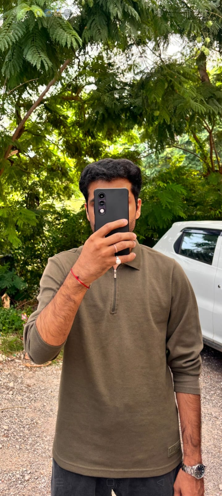

Stay curious
Ask better questions and keep exploring beyond the obvious answer.
COMPUTER SCIENCE · JUIT
I’m Bhaskar Pandey, a Computer Science & Engineering student exploring software, problem solving, and the places where technology meets the real world.

Good technology starts with good questions. I like learning how things work, then making something useful with what I learn.
✳A BIT ABOUT ME
01 — 04I’m pursuing a B.Tech in Computer Science & Engineering at Jaypee University of Information Technology. My interests span programming fundamentals, data structures and algorithms, practical software projects, and robotics.
I learn best by moving between ideas and hands-on work: understanding a problem, trying an approach, and improving it along the way. I’m at the beginning of that journey, and keen to keep building.
Have something interesting in mind? ↗Ask better questions and keep exploring beyond the obvious answer.
Turn new ideas into small, useful things you can actually test.
Look for the human problem behind every technical challenge.
THINGS I’M EXPLORING
02 — 04Ideas and project themes that bring together software, access, and the physical world.
CURRENTLY BUILDING MY TOOLKIT
03 — 04A snapshot of the areas I’m developing through coursework and hands-on exploration.
Programming · Data structures & algorithms · Problem solving
Web technologies · Software projects · Product thinking
Robotics · ROS 2 · Computer vision · Gesture recognition
↳ Skills shown as areas of focus, not proficiency ratings.
THE STARTING POINT
B.Tech, Computer Science & Engineering
04 — 04 · GET IN TOUCH
OPEN TO CONVERSATIONI’m always glad to talk about interesting ideas, projects, and opportunities to learn together.
The contact form will be ready once the inbox address is configured.